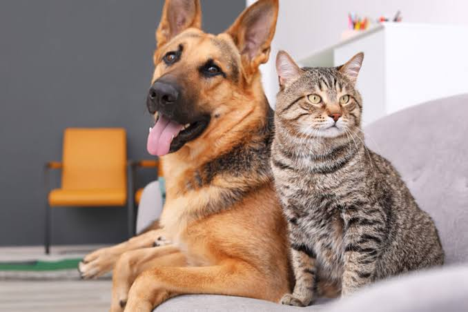

La mejor Atención
para Nuestros Amigos
Nuestro equipo médico está en constante capacitación para ofrecerte las últimas tendencias en tratamientos veterinarios preventivos y de alta complejidad.
Nuestros Servicios
Conocé todo lo que podemos hacer por la salud de tu compañero de vida
Atención médica
Consultas veterinarias para diagnosticar y tratar enfermedades, así como chequeos de rutina.
Vacunación
Programas de vacunación para proteger a sus mascotas contra enfermedades comunes.
Cirugía
Procedimientos quirúrgicos realizados por veterinarios experimentados, desde cirugías de rutina hasta intervenciones complejas.
Desparasitación
Tratamientos para prevenir y eliminar parásitos internos y externos.
Asesoramiento nutricional
Orientación sobre la alimentación adecuada, recomendaciones de dietas balanceadas y suplementos.
Servicios de emergencia
Atención veterinaria de urgencia disponible para situaciones críticas con asistencia inmediata.
Horarios de Atención
Nuestros Especialistas
Un equipo altamente capacitado que comparte tu pasión por los animales.
Dr. Juan Pérez
Veterinario jefe. Especialista en cirugía general y traumatología con más de 15 años de experiencia.
Dra. Ana Gómez
Especialista en nutrición animal y medicina preventiva. Coordinadora de talleres educativos.
Dr. Carlos Ruiz
Médico clínico de urgencias 24h. Experto en cuidados intensivos y ecografía veterinaria.